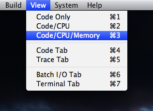
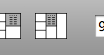
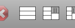

|
Debugging Programs |
The Pep/9 system provides debugging tools to help you locate errors in the programs you write. The tools include a memory dump, break points, and a symbolic trace feature. If you are debugging a machine language program that you wrote you can use the memory dump feature but you cannot set break points or use the symbolic trace feature. You can use all the debugging features if you are debugging an assembly language program. An additional debugging tool is the byte converter, which is available any time the application is running.
Topics: The memory dump, Break points, Symbolic trace, Byte converter.
 
The Pep/9 application may run noticibly slower when the Memory Dump pane is visible. You can click either of the other two view icons to hide the Memory Dump pane.

You can scroll to any location in memory using the scroll bar on the right. To scroll to a specific memory location enter the address in hexadecimal in the input field at the bottom of the pane. Click the SP button to scroll to the run-time stack. Click the PC button to scroll to the region of memory pointed to by the program counter.

Then select Build->Start Debugging Object from the menu, which puts you in the debugging mode.

If you are debugging an assembly language program that you wrote, enter the program in the Source Code pane. Assemble it by selecting Build->Assemble from the menu or clicking on the hammer icon in the tool bar.


Then select Build->Start Debugging Source from the menu, or click on the icon with the bug in the toolbar, which puts you in the debugging mode.


The CPU pane shows you the values of the NZVC bits and of each register in the CPU. The following screenshot shows the CPU pane after one click of the Single Step button for the object program from Figure 4.35.

The CPU pane displays the content of the accumulator, index register, stack pointer, and program counter first in hexadecimal and then in decimal. It displays the instruction specifier first in binary, and then as a mnemonic. If the instruction is nonunary, it decodes the addressing mode field and shows the corresponding letter for the addressing mode after the mnemonic, and displays the operand specifier.
The operand is not part of the CPU, except for the case of immediate addressing when the operand is the operand specifier. However, for the convenience of the programmer, the CPU pane computes the value of the operand from the addressing mode and displays it as well. The Operand field in the CPU pane is enclosed in parentheses to emphasize the fact that it is not part of the CPU.

The values in the CPU pane are the values after the instruction in the instruction specifier has executed.
For example, the values in the above screenshots are the values after the first CHARI executes.
In the von Neumann cycle, the program counter increments before the instruction executes.
So, the value of the program counter is the address of the next instruction to execute.
In the above screenshot, the program counter is 3, which is the address of the next instruction to execute,
while the instruction that just executed is the instruction at address 0.
As you single step through the program, the Memory Dump pane highlights in red the bytes that have changed, and highlights in blue the bytes of the instruction as specified by the program counter. The following screenshot shows the Memory Dump pane after the first click of the Single Step button.

Each line of the Memory Dump pane displays eight bytes, each byte represented as two hexadecimal digits. The address in the first column is the address of the first byte. The rightmost column shows the value of the bytes in the row displayed as ASCII characters. If the byte is a control character that cannot be displayed, the column depicts the value as a period.
The above screenshot highlights the byte at address 000D in red because the first CHARI instruction
input the letter u at that address.
It hightlights the bytes starting at address 0003 in blue because that is the value of the program counter,
and those bytes are the instruction that will execute next.
The Memory Dump pane also highlights the top byte of the stack in magenta.
The following screenshot from Figure 6.1 shows the stack starting at address FBCE just before the ADDSP executes.


If you want to terminate the debugging session without running the program to completion, select Build->Stop Debugging from the menu or click the stop sign icon in the menu bar.


As you single step through the program, the CPU shows the content of the registers as described in the previous section.
Remember that the CPU pane shows the values of the registers after the instruction in the instruction specifier
has executed.
In addition, the Trace pane highlights the instruction specified by the program counter, which is the next instruction
to be executed.
The following screenshot shows the Trace pane after five clicks of the Single Step button.
The LDA instruction has just executed, and the ADDA instruction will execute next.


STA instruction.

When the programmer clicks the Resume button, the program resumes executing until it gets to an instruction with a breakpoint
or until completion if no breakpoint is encountered.
The following screenshots show what happens when the Resume button is clicked.
Note that the STA instruction will execute next if the programmer clicks the Single Step button at this point.


As you single step through your program, if you execute a trap instruction the Trace pane will show the individual instructions
in the trap handler of the operating system.
The following screenshot shows the DECI instruction about to be executed.

Clicking the Single Step button at this point causes the Trace pane to switch to the trap handler in the operating system. The screenshot below shows the Trace pane after clicking the Single Step button. It highlights the first instruction in the trap handler of the operating system.

When you are tracing an operating system trap, you can set breakpoints and click Single Step or Resume as you would
with the source program.
If you resume within the operating system and encounter no further breakpoints, Pep/9 will continue after the return
from trap instruction RETTR
to the source program until it encounters a break point there.
# character and supplies information to the symbol tracer on how to format
and label the memory cell in the trace window.
If your program does not include trace tags, the memory trace pane will not be visible when you run your program. You can still use the debugger to single-step through your program and set break points. If it does include trace tags, but errors are detected in the tags, a blue warning will be issued. You can still run your program and use the debugger, but the memory trace pane will not be visible. The screenshot below shows what happens if you make an error in one of the trace tags in the program from Figure 5.26.

If your program does include trace tags and they have no errors, the memory trace will automatically become visible
below the listing trace pane.
As you single-step through the program, you can see the global variables on the left, and the run-time stack on the right.
The only user interface control that affects the symbolic trace display is the magnification input at the bottom left of the pane.
Here is a screenshot of the memory trace pane from the program in Figure 6.21.
The memory cell for k on top of the run-time stack is colored red because the STA
instruction has just changed its value.

The sybolic trace feature displays global variables allocated with the .BLOCK dot command,
parameters and local variables allocated with the SUBSP instruction, the fields of a global struct,
and storage from the heap allocated with the new operator.
See the text for information on how to use trace tags in your programs.
P in the ASCII field.

An instruction specifier decoder is to the right of the four input fields. It displays the instruction mnemonic and possibly the addressing mode assuming you interpret the byte value as an instruction specifier.